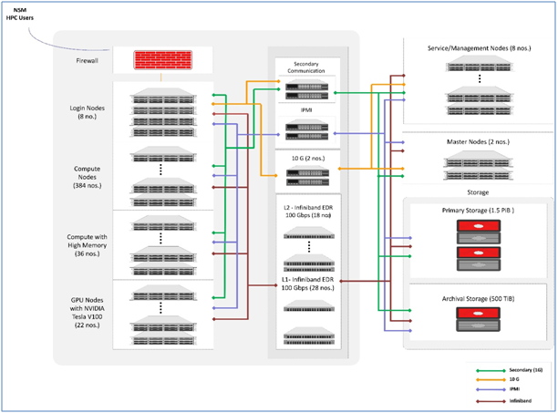

PARAMSHAKTI Supercomputing Facilty
Introduction
This documentation summarizes the user manual for the PARAM SHAKTI Supercomputing facility at IIT-KGP Kharagpur. It covers a wide range of topics from a detailed description of the hardware information and about the basic production environment such as how-to login, information about submitting jobs, etc. The supercomputer PARAM SHAKTI is based on a heterogeneous and hybrid configuration of Intel Xeon Skylake processors,NVIDIA Tesla V100. The system was designed and implemented by HPC Technologies team, Centre for Development of Advanced Computing (C-DAC). It consists of 2 Master nodes, 8 Login nodes, 6 Service nodes, 2 Firewall nodes , 2 Management nodes and 442 (CPU+GPU) nodes with total peak computing capacity of 1.63 (CPU+GPU) PFLOPS performance.
System Architecture and Configuration
PARAM SHAKTI systems are based onIntel Xeon SKL G-6148, NVIDIA Tesla V100 with total peak performance of 1.63 PFLOPS. The cluster consists of compute nodes connected with Mellanox (ERD) infiniBand interconnect network. The system uses the Lustre parallel file system.

Figure :(1). PARAM SHAKTI Architecture Daigram
System Hardware Specifications
Total number of nodes:
442 (384 + 22 + 36)
Master nodes: 2
Login nodes: 8
Service nodes: 10
CPU nodes: 420
* GPU accelerated nodes: 22
-
Master Nodes: 2
Master Nodes : 2*2* Intel Xeon SKL G-6148 Cores =40, 2.4 Ghz ,Total Cores = 80 cores Memory= 384 GB, Total Memory = 768 GB HDD = 900 GB -
Login Nodes: 8
Login Nodes : 82 Intel Xeon SKL G-6148 Cores = 40, 2.4 Ghz ,Total Cores = 320 cores Memory= 384 GB ,Total Memory = 3072 GB HDD = 900 GB
-
CPU Compute Nodes: 420
* CPU only Compute Nodes : 384*2* Intel Xeon SKL G-6148 Cores = 40, 2.4GHz ,Total Cores = 15360 cores Memory= 192 GB, DDR4 2666 MHz, Total Memory=737280 GB SSD = 480 GB (local scratch) per node- CPU only Compute Nodes High memory : 362 Intel Xeon SKL G-6148 Cores = 40, 2.4GHz , Total Cores = 1440 cores Memory= 768 GB, DDR4 2666 MHz , Total Memory=27648 GB SSD = 480 GB (local scratch) per node
-
GPU Compute Nodes: 22
GPU Compute Nodes : 22 2nVidia V100 CPU Cores = 40, 2.4GHz Total CPU Cores = 880 Memory= 192 GB, DDR4 2666 MHz Total Memory= 4224 GB SSD= 480 GB (local scratch) per node
GPU Cores per node= 2*5120= 10240
GPU Memory = 16 GB HBM2 per nVidia V100
-
Storage File System
*Based on Lustre parallel file system- Total useable capacity 2.1 PiB primary storage and Archival storage 500 TiB
- Throughput 50GB/s
-
Operating System
- Operating system on PARAM SHAKTI is Linux – CentOS 7.6
Network Infrastructure
* Computing nodes of PARAM SHAKTI are interconnected by a high-bandwidth, low-latency interconnect network.
*Primary Interconnect Network
InfiniBand: 100 Gbps
InfiniBand is a high-performance communication architecture owned by Mellanox.
This communication architecture offers low communication latency, low power consumption and a high throughput.
All CPU nodes and GPU nodes are connected via InfiniBand interconnect network.
* Secondary Interconnect Network
Gigabit Ethernet: 1 Gbps
Gigabit Ethernet is the interconnect network that is most commonly available.
For Gigabit Ethernet, no additional modules or libraries are required.
The Open MPI, MPICH implementations will work over Gigabit Ethernet.
Functional Areas Components
Base OS : CentOS 7.6
Architecture : X86_64
Provisioning
Cluster Manager : xCAT 2.14.6
Openhpc : (ohpc-xCAT 1.3.8)
Monitoring Tools : Nagios, Ganglia, XDMoD
Resource Manager : Slurm
I/O Services : Lustre Client
High Speed Interconnects : Mellanox InfiniBand
Compiler Families : GNU (gcc, g++, gfortran)
Intel Compiler : (icc, ifort, icpc)
MPI Families : MVAPICH, OpenMPI, MPICH
Software Stack
System Access
* Accessing the cluster
The cluster can be accessed through 8 general login nodes, which allows users to login.
You may access login node through ssh.
The login node is primary gateway to the rest of the cluster, which has a job scheduler (called SLURM). You may submit jobs to the queue, and they will run when the required resources are available.
Please do not run programs directly on login node. Login node is used to submit jobs, transfer data and to compile source code. (If your compilation takes more than a few minutes, you should submit the compilation job into the queue to be run on the cluster.)
By default, two directories are available (i.e. /home and /scratch). These directories are available on login node as well as the other nodes on the cluster. /scratch is for temporary data storage, generally used to store data required for running jobs.
* Remote Access
* Using SSH in Windows
To access PARAM SHAKTI, you need to “ssh” the login server.
PuTTY is the most popular open source “ssh” client application for Windows, you can Download it from (http://www.putty.org/).
Once installed, find the PuTTY application shortcut in your Start Menu, desktop. On clicking the PuTTY icon, The PuTTY Configuration dialog should appear. Locate the “Host Name or IP Address” input Field in the PuTTY Configuration screen. Enter the username along with IP address or Hostname with which you wish to connect.
(e.g. [username]@paramshakti.iitkgp.ac.in)
Enter your password when prompted, and press Enter.
* Using SSH in Mac or Linux
Both Mac and Linux systems provide a built-in SSH client, so there is no need to install any additional package.
Open the terminal, connect to an SSH server by typing the following command:
ssh[username]@[hostname]
For example, to connect to the PARAM SHAKTI Login Node, with the username
user1: ssh user1@paramshakti.iitkgp.ac.in
You will be prompted for a password, and then will be connected to the server.
Password
How to change the user password?
Use the passwd command to change the password for the user from login node.
Best Practices for HPC
Do NOT run any job which is longer that few minutes on the login nodes. Login node is for compilation of job. It is best to run the job on computes.
It is recommended to go through the beginner’s guide in /home/apps/cdac/samples This should serve as a good starting point for the new users.
Use the same compiler to compile different parts/modules/library-dependencies of an application. Using different compilers (e.g. pgcc + icc) to compile different parts of application may cause linking or execution issues.
Choosing appropriate compiler switches/flags/options (e.g. –O3) may increase the performance of application substantially (accuracy of output must be verified). Please refer to documentation of compilers (online / docs present inside compiler installation path / man pages etc.)
Modules/libraries used for execution should be the same as that used for compilations. This can be specified in the Job submission script.
Be aware of the amount of disk space utilized by your job(s). Do an estimate before submitting multiple jobs.
Please submit jobs preferably in $SCRATCH. You can back up your results/summaries in your $HOME
$SCRATCH is NOT backed up! Please download all your data!
Before installing any software in your home, ensure that it is from a reliable and safe source. Ransomware is on the rise!
Please do not use spaces while creating the directories and files.
Please inform hpc-help when you notice something strange - e.g. unexpected slowdowns, files missing/corrupted etc.
Slurm Job Submission
What is SLURM
SLURM (Simple Linux Utility for Resource Management) is a workload manager that provides a framework for job queues, allocation of compute nodes, and the start and execution of jobs.
Using SLURM
The cluster compute nodes are available in SLURM partitions. User submits jobs to requisition node resources in a partition. SLURM partitions for general use are “standard”. A few of the sample commands are given below.
sinfo Lists out the status of resources in the system
squeue Lists out the Job information in the system
sbatch
** Imp Notes:
Compilations are done on the login node. Only the execution is scheduled via SLURM on the compute/GPU nodes
Upon Submission of a Job script, each job gets a unique Job Id. This can be obtained from the ‘squeue’ command.
The Job Id is also appended to the output and error filenames.
Parameters used in SLURM job script
The following table gives a few parameters which can be used in the SLURM Job submission script.
It should be noted that, most of the parameters are optional. The job flags are used with SBATCH command.
The syntax for the SLURM directive in a script is "#SBATCH